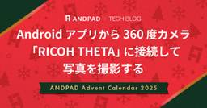
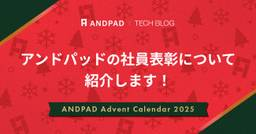
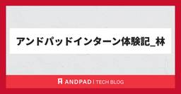
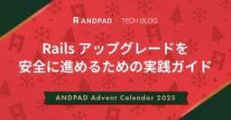
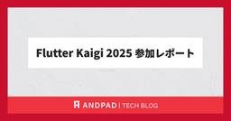
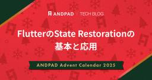
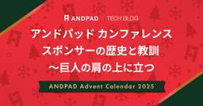

ANDPAD Tech Blog
https://tech.andpad.co.jp/
ANDPAD の開発部からのお知らせやエンジニアリングに関する話題を発信するTech Blog です。
フィード

Android アプリから 360 度カメラ「RICOH THETA」に接続して写真を撮影する
ANDPAD Tech Blog
こんにちは。ANDPAD の Android アプリを開発している 平池 です。 この記事は ANDPAD Advent Calendar 2025 の 13 日目の記事です。 この記事では、弊社が提供する Android 版の ANDPAD施工管理 (以下、施工管理アプリ) にて、360 度カメラ「RICOH THETA」と接続して写真を撮影する機能を提供しましたので、その実装過程や難しかったことなどを共有します。 この記事を通して、建築建設現場で利用する Android アプリの開発について、少しでもイメージを膨らませていただければ幸いです。 RICOH THETA とは RICOH TH…
14時間前

アンドパッドの社員表彰について紹介します！ 2
2
ANDPAD Tech Blog
こんにちは！テックブログチームの池田です！ この記事は ANDPAD Advent Calendar 2025 12 日目 の記事です。 もうすぐ年末ですね！年末といえば、流行語大賞をはじめ、さまざまな「年間優秀賞」が発表される時期です。 そこでこの時期に合わせて、アンドパッド社員に送られる賞についてご紹介したいと思います！ 表彰の概要 アンドパッドでは、全社員が参加する「全社総会」と、開発組織とプロダクト組織が合同で行っている「Devpro総会」で、さまざまな賞があります。 受賞対象は、アンドパッドが大切にしている6つのValueを体現したメンバーやチームが選ばれます。 それでは、どんな表彰…
2日前

アンドパッドインターン体験記_林
ANDPAD Tech Blog
(テックブログ編集部より) アンドパッドでは今年サマーインターンを募集し、ありがたいことに複数名にご参加いただきました。 引き続き今回も、インターンに参加した方にレポートを書いていただきました ! それでは、サマーインターン参加の 林 さんの生の声をお聞きください! どうも！Androidアプリの個人開発をメインにしている林と申します。 アンドパッドで10/20~11/25の約一ヶ月間インターンに参加させていただいたので、それについて主観モリモリで色々書いていこうと思います！ 参加のきっかけ インターン概要 働き方・カルチャー面 学び まとめ 余談 参加のきっかけ ある日、登録していた求人サイ…
3日前

Rails アップグレードを安全に進めるための実践ガイド 35
ANDPAD Tech Blog
こんにちは、ザックです。フリーランスの Rails 開発者として、過去 2.5 年間アンドパッドで働いています。 アンドパッドでは、主にモノリシックアプリケーションの Rails アップグレードを担当しています。 Rails のアップグレードは、破壊的変更の早期検知、保守性の維持、将来的なコスト削減のために欠かせません。 古い挙動や monkey-patch を抱えたまま放置すると、アップグレードの難易度とリスクは急速に上がります。 そのためアンドパッドでは、変更を小さく保ち、安全に進めるためのアップグレードプロセスを運用しています。 このポストでは、その手順と考え方を紹介します。 Rails…
3日前

Flutter Kaigi 2025 参加レポート 1
ANDPAD Tech Blog
アンドパッドのエンジニアがFlutter Kaigi参加してきました！ Flutter Kaigi 2025 にアンドパッドのエンジニア４名が参加してきました。 今年の Flutter Kaigi 2025 は、例年の「Flutterの新機能を追うイベント」とは明らかに違い、技術的な転換点を迎えた年だったと強く感じました。 特に、MCP / LLM など AI の実務活用が本格的に議論され始めたことは非常に大きな変化といえます。 本記事では以下の点をまとめました。 2024 → 2025 の大きな潮流変化の読み解き 技術カテゴリ別セッションマップの確認 アンドパッドのエンジニアとして特に刺さっ…
4日前

FlutterのState Restorationの基本と応用 3
ANDPAD Tech Blog
なぜState Restorationの話？ 正直に言うと、Flutter の State Restoration は今年もっとも苦しめられたテーマでした。 「面倒」という言葉で片付けられるものではなく、仕組みを理解していないと破綻する設計領域です。 開発現場でも「なんとなく使っている」「勝手に復元される仕組み」と誤解されやすく、 正しい設計思想・保存のタイミング・責務の境界を理解している人は驚くほど少ないと感じました。 だからこそ、この知識は社内に閉じるべきではない、と考えています。 今年向き合ったすべての試行錯誤と理解を、Advent Calendar の形で公開し、 「State Res…
4日前

アンドパッド カンファレンススポンサーの歴史と教訓 ～巨人の肩の上に立つ
5
ANDPAD Tech Blog
こんにちは id:sezemi です。 この記事は ANDPAD Advent Calendar 2025 の 9 日目の記事です。 前回の記事でも触れましたが、 フットボールネーション 20 巻 がいよいよ 12/26 に発売です。 ちなみに、ふりかえりは 2 周目に入っています。 さて、先月 11/18 に私も所属している DevRel Guild という技術広報コミュニティでカンファレンススポンサーをテーマとした Meetup 、 DevRel Guild Meetup #5 が開催されました。 そこでプロポーザルを出したところ、残念無念、不採択だったので、テックブログでお披露目します。…
5日前

RubyGems/Bundler 4.0 最速解説
ANDPAD Tech Blog
こんにちは、hsbt です。 相変わらず原神やゼンレスゾーンゼロをプレイしているのですが、Yotei をひと段落したあとにアサシンクリードシャドウズをプレイしてみたら、面白さ再発見という感じで楽しくプレイしています。 今回は、私がメンテナとして開発をしている RubyGems と Bundler のメジャーアップデートである 4.0.0 の重要な変更点と備えについて解説します。特に Bundler 4の変更は、セキュリティの強化 と、長年の混乱の元となっていた暗黙的な挙動の明確化 に焦点を当てています。長年の利用を通じて慣れ親しんだ動作のいくつかがBundler 4でデフォルトから変更されます…
9日前
中途UI/UXデザイナーが入社3ヶ月で自走するまでのオンボーディング【ANDPAD DESIGNERS】
ANDPAD Tech Blog
はじめに はじめまして！ 2025年6月にUI/UXデザイナーとしてアンドパッドへ入社した、いしはらです。 ANDPAD Advent Calendar 2025 4日目の記事を担当します！ 今年ももう12月を迎え、気がつくと入社から6ヶ月が経過していました。 たった6ヶ月、されど6ヶ月。 緊張しながら本社でエレベーターのボタンを押したあの日から、担当プロダクトにジョインするまでのオンボーディングを、リアルな体験記として皆さんにお届けしたいと思います！ はじめに どうしてアンドパッドへ？ 全社での新入社員研修（初日〜1週目） デザイナーオンボーディングとは 基礎オンボーディング 部長から学ぶ「…
10日前
ANDPADの写真書き込み機能における、プロトコル準拠・継承を用いた拡張性を高めるための工夫
ANDPAD Tech Blog
アンドパッドの山根です。 先日の11月13日、日本経済新聞社様が主催するテックイベント「NIKKEI Tech Talk」に、弊社が協賛し、私自身も登壇させていただきました。 【日経×ニフティ×アンドパッド】モバイルアプリでつなぐ現場と暮らし〜情報が“届く”を再設計する〜 - connpass 本記事では、そのイベントで発表した「写真書き込み機能」について、行ったエンハンスの概要とその実装の工夫を詳しく解説していきます。 ANDPAD 写真書き込み機能の強化 ANDPADには、写真上にフリーハンドの線や図形、テキストを自由に追加できる「写真書き込み機能」があります。 先日、写真書き込み機能は、…
11日前
『リファクタリングは余裕ができたら』を卒業した話 〜ロードマップと歩むコード改善〜
ANDPAD Tech Blog
この記事はANDPAD Advent Calendar 2025の 2 日目の記事です。 メリークリスマス🎄 バックエンドエンジニアの武山 (bushiyama) です。 去年に引き続き、ANDPAD請求管理のバックエンドを担当しています。 多くの開発現場で聞かれる「余裕ができたらやろう」。 しかし、ロードマップは常に詰まっており、その「余裕」は永遠に来ないのでは？ その考え方を「卒業」し、今年1年かけて実践してきました。 ロードマップ(機能開発)という「攻め」と、 リファクタリングという「守り（であり攻めでもある）」を両立させるためにどんなことをして、どんな成果をあげたかアウトプットするもの…
12日前
先読み Go 1.26 Draft
ANDPAD Tech Blog
ANDPADアドベントカレンダー2025 1日目！ 先頭打者はANDPAD Tech Leadの tomtwinkle が務めさせていただきます。 この記事は hatena.go #2 で発表したGo 1.26ネタLTをベースにしたものです。 流石に5分LTだと喋りきれなかった…！ developer.hatenastaff.com 前書き Go は昔から年に2回、2月と 8月 に新バージョンをリリースするという Go Release Cycle に沿って開発が進められています。 go.dev rc版が出るのは大体12月なので、アドベントカレンダーの時期にはもしかするとrc版がリリースされてい…
13日前
Ruby Hackathon at RWC 2025 を開催してきました
ANDPAD Tech Blog
こんにちは柴田です。Ghost of Yotei もひと段落したので今年プレイしてきたゲームのプラチナトロフィー獲得を進めながら GOTY にノミネートされた作品を見て大賞の発表を心待ちにしている日々です。 さて今回は 11/5 に開催した Ruby Hackathon at RWC 2025 とアンドパッドの宴についてご紹介します。 Ruby Hackathon at RWC 2025 - Ruby Association | Doorkeeper Ruby Hackathon とは何か Ruby Hackathon の前身は RubyKaigi の本番前日に開催していた開発者会議です。月次…
17日前
ダーツの旅で点と点をつなぐ ─ 私がアンドパッドに入社した理由
ANDPAD Tech Blog
はじめに この記事は、アンドパッド入社後6ヶ月目の私が、自分自身の入社前後を振り返った入社エントリーです。 ※記事内容は投稿作成時の情報です。 はじめまして。2025年6月にプロダクト本部 プロダクトアナリティクス部に入社しました山中です。 この記事が、アンドパッドについてもっと知りたい方、特に、多様なキャリアを歩まれている方の参考になれば幸いです。 はじめに これまでのキャリア ダーツの旅 入社前 転職という選択肢 価値観を知る アンドパッドからの提案 入社後 希望していた世界観 配属後 求められる役割 具体的な業務 最後に これまでのキャリア ダーツの旅 私は今回で5回目の転職になります。…
19日前
エンジニア評価制度を再設計した1年の軌跡とこれからのチャレンジ
ANDPAD Tech Blog
はじめまして。 アンドパッドで主にエンジニア組織のマネジメントを行っている辻です。 アンドパッド開発本部ではこの1年あまり、エンジニアの評価制度を見直すプロジェクトに取り組んできました。 目的は、多様化するエンジニアのキャリアを正しく評価できる仕組みをつくることです。この記事では、制度見直しの背景から、取り組みのプロセス、現状、そしてこれからの展望について紹介します。 元々の評価制度の課題とゴール設定 改善に向けてのステップ ステップ1：エンジニアのキャリアパスを明確化 ステップ2：Grading Definitionの策定 ステップ3：ジョブタイトルの整理とキャリアラダーの設計 ステップ4：…
23日前
楽しかった Vue Fes Japan 2025 のふりかえり
ANDPAD Tech Blog
こんにちは、 id:sezemi です。 秋に最終巻が出た アオアシ のラストが良すぎてロスになっていた時期を過ぎ、もう年末ですね。 年末といえば恒例となった年一刊行の フットボールネーション の新刊です。 19 冊のふりかえりを始めております。 さて、遅くなってしまいましたが、 10/25 に開催された Vue Fes Japan 2025 にアンドパッドはゴールドスポンサーとして参加 and ブース出展してきました ! すでに多くの参加レポートが出ていますが、本当に楽しかったですね。 アンドパッドの面々も存分に楽しめました。 今回はその楽しかった Vue Fes Japan 2025 のふ…
24日前
アンドパッドインターン体験記_浅田
ANDPAD Tech Blog
(テックブログ編集部より) アンドパッドでは今年サマーインターンを募集し、ありがたいことに複数名にご参加いただきました。 前回に引き続き今回も、インターンに参加した方にレポートを書いていただきました ! hrmos.co それでは、サマーインターン参加の 浅田 さんの生の声をお聞きください! こんにちは！アンドパッドで1ヶ月インターンさせていただいた浅田です。 本記事では今回の体験をまとめています。今後就活でインターンを検討している方がこれを読むことで、インターンのイメージを掴んだり、参加の判断に役立てたりできるような視点で書いていこうと思います。 嘘偽りなく率直に書いていくので、同じ就活生の…
1ヶ月前
iOSDC Japan 2025に参加しました！！
ANDPAD Tech Blog
アンドパッドの山根です。 2025年9月19日から21日までの3日間iOSDC Japan 2025が開催されました。 今年は弊社はゴールドスポンサーとして参加していました。 他にも、スポンサーセッションで1名、そしてLTセッションでも1名が登壇しました。両セッションとも多くの方にご参加いただき、ありがとうございました！ 会場の雰囲気 今回の会場は、有明セントラルタワーホール＆カンファレンスでした。 参加者が多いiOSDCですが、この会場は非常に広々としており、メインホールや各セッションルームも十分なスペースが確保されていたため、多数の来場者を受け入れるのにぴったりの場所だったと感じます。 ま…
1ヶ月前
Vue のカスタムブロックで「気軽に」始める仕様駆動開発のススメ
ANDPAD Tech Blog
ANDPAD フロントエンドエンジニアの小泉（ @ykoizumi0903 ）です。主に Vue で開発を行っています。 2025 年も終わりに近づいていますが、ここ 1 年のホットなトピックといえば、何とも言っても AI コーディング。 これまでの開発スタイルでは考えられない速度が出せるため、いかに AI を使いこなすかがエンジニアの生産性を大きく左右するようになっています。1 年前の今頃は、まだ Cline も Claude Code も GitHub Copilot Agent Mode も登場していなかったというのが信じられないですね……。 この記事では、そんな AI エージェントを上…
2ヶ月前
アンドパッドの開発者から見たユーザ志向と仕組み作り
ANDPAD Tech Blog
はじめに こんにちは。 ANDPAD 引合粗利管理の開発に従事しています小笠原と申します。 今年の夏は珍しく外に出ることが多く、自分としてはかなり活動的な夏になったと感じております。 その代償に体調を崩すことも多く、これが加齢か……と実感してしまいました。なんだか哀しいですね。 としみじみしていたらすっかり秋めいていて時間の早さに驚いております。これも、加齢……？ さて、前置きはほどほどにして。 私事ではありますがアンドパッドに入社してから半年以上が経ちました。 アンドパッドに興味を持ってくださる方の参考になればと思い、私がアンドパッドに転職して感じたことを徒然と書き留めてみたいと思います。 …
2ヶ月前
iOSDC Japan 2025 アンドパッドSwiftクイズ解説 - Day2 午後
ANDPAD Tech Blog
まいど、西 @jrsaruo_tech です。こんなにたくさん文章を書いたのは久しぶりです。 iOSDC Japan 2025、アンドパッドのブースでは5回に分けて計20問のSwiftクイズを出題しました。 Day0 Day1 午前 Day1 午後 Day2 午前 Day2 午後 ← 本記事 本記事ではDay2 午後に出題したクイズ4題を解説します。 それぞれの解答と解説はセクションを閉じているので、まだ解かれていない方はぜひチャレンジしてみてください。 ※ クイズで使用しているSwiftのバージョンは6.1.2、言語モードは6です。 % swift --version swift-drive…
2ヶ月前
iOSDC Japan 2025 アンドパッドSwiftクイズ解説 - Day2 午前
ANDPAD Tech Blog
こんにちは、西 @jrsaruo_tech です。 iOSDC Japan 2025楽しかったですね！感想はまた別の記事で。 アンドパッドのブースでは最終日もクイズを出題していました。 Day0 Day1 午前 Day1 午後 Day2 午前 ← 本記事 Day2 午後 遅くなってしまいましたが、本記事ではDay2 午前に出題したクイズ4題を解説します（Q4の解説執筆に苦戦しました）。 それぞれの解答と解説はセクションを閉じているので、まだ解かれていない方はぜひチャレンジしてみてください。 ※ クイズで使用しているSwiftのバージョンは6.1.2、言語モードは6です。 % swift --v…
2ヶ月前
【写真で解説】アンドパッド新オフィス＋ANDPAD STADIUMへの行き方
ANDPAD Tech Blog
ついに移転！ 生まれ変わった新オフィスへの行き方をご案内します！ こんにちは、なかのです！ この度、業務拡大に伴い、三田エリアの住友不動産東京三田ガーデンタワーへ本社を移転いたしました。グループ会社の株式会社コンベックスも新オフィスで業務を開始しています。 新しいオフィスのコンセプトは、「ANDPAD ENGAGE STUDIO」です。社員の多様な働き方をサポートするワークスペースに加え、約200名収容のイベント空間「ANDPAD STADIUM」なども新設されました。 この新しい拠点から、「幸せを築く人を、幸せに。」というミッション達成に向けて、より一層邁進してまいります。 初めてご来社いた…
2ヶ月前
物体検出に使用するライブラリを mmdetection から transformers へ移行した話
ANDPAD Tech Blog
序文 こんにちは、データ部ML Product Devチームに所属している酒巻です。 ML Product Devチームは「機械学習を活用した競合優位性のあるプロダクト開発」をミッションとし、プロダクト開発チームと協力して日々開発しています。 今回のブログでは、物体検出タスクで使用していた mmdetection から transformers へ移行した話について共有します。 背景 MLチームでは物体検出のタスクで mmdetection を様々なプロジェクトで活用しています。 しかし、直近1年以上更新のない状態が続いており、セキュリティ面において懸念が出てきました。 そこで mmdetec…
2ヶ月前
Go1.25リリース！ gopls待望のFileSet.AddExistingFilesの追加の経緯とその後google/wire,go-swagger等で発生したトラブル - unsafe の必要性と危険性について -
ANDPAD Tech Blog
序文 土日のGo Conference 2025 , 月曜の golang.tokyo , 火曜の Go 1.25 リリースパーティ と 連日Goイベントに参加してようやくひと段落ついたのでテックブログを書いてます。 裏番組では Kaigi on Rails 2025 やってたり PyCon JP 2025 やってたり全部参加するなら体が3つくらい欲しいWeekでしたね。 運営の皆さん、参加者の皆さん、そしてテック系企業の広報の皆さんはお疲れ様でした。 どうも、ANDPADのテックリードをやってる tomtwinkle です。 こちらのテックブログの方では「†黒魔術†に対する防衛術」ぶりです。…
2ヶ月前
Devinを3ヶ月使って、マイクロサービスの開発チームが抱えていた課題を解決した話
ANDPAD Tech Blog
こんにちは。アンドパッドでプロダクト開発をしている宇田川です。フロントエンド・バックエンドの開発を担当しています。 わたしのチームでは、マイクロサービスとして切り出された歴史ある5つのリポジトリを運用しています。これらのリポジトリの急なバグ修正やライブラリ更新には、「うーん、このリポジトリどうなってるんだっけ…」と、毎回大きな調査コストと心理的な負担がかかっていました。この課題を、クラウドで自律して動くコーディングエージェントで解決できるか試したく、今回Devinを使ってみることにしました。 Devinを3ヶ月ほど使ってみて、この辺りの作業がかなり楽になったなと感じたので、今回はその知見をシェ…
2ヶ月前
アンドパッドインターン体験記_海上
ANDPAD Tech Blog
(テックブログ編集部より) アンドパッドでは今年サマーインターンを募集し、ありがたいことに複数名にご参加いただきました。 そこで今回、そのサマーインターンの模様を参加者にレポートしてもらうことになりました ! hrmos.co それでは、サマーインターン参加の 海上 さんの生の声をお聞きください! アンドパッドのエンジニア向け サマーインターン に参加した海上(うながみ)です。 ここではインターンで何をしたか、アンドパッドの雰囲気や学びを共有します。 インターン概要 約一ヶ月のインターンでは黒板チームに配属され、実際の開発タスクに携わりました。 初めて実務開発かつRuby on Rails開発…
2ヶ月前
CREがデータ修正機能を開発して業務効率化をおこなった話 ~定常的なデータ修正対応を管理画面からできるように改善~
ANDPAD Tech Blog
こんにちは！CREの山本です。今回はCREが機能を開発し、定常的に発生するデータ修正作業の工数削減に挑んだ話について書こうと思います！ はじめに 以前ブログを寄稿してから1年以上間が空いてしまいました。 アンドパッドにJOIN後に色々なことがありましたがトータルで約3年が経とうとしています。 前回のブログ寄稿時はANDPAD施工管理をメインで担当しておりました。現在は引合粗利管理や請求管理といった施工管理とは別分野のプロダクトを担当し、日々課題に向き合っております。 前回のブログ tech.andpad.co.jp 前提 基本的にCREのメインの業務は開発部門への問い合わせ対応における一次調査…
2ヶ月前
Rails World 2025 でパネルディスカッションに参加してきました
ANDPAD Tech Blog
Rails World 2025 参加レポート こんにちは、hsbtです。Ghost of Yōtei の発売日が近づいてきて、北海道出身者として羊蹄山や各エリアがどのように表現されるかを待ちきれない日が続いています。羊蹄山、といえば子供の頃に父親と一緒に登頂し、霧で何も見えなかった山頂付近が山小屋で休憩したあとはとても綺麗な景色が広がっていた、という記憶がうっすらとあります。 さて、2025年9月4日から5日にかけて、オランダ・アムステルダムの Beurs van Berlage という歴史あるホールで開催されたRails World 2025に参加しました。 会場風景 本カンファレンスは、…
2ヶ月前
入社半年で気づいた「プロダクトと顧客を繋ぐ」仕事の面白さ
ANDPAD Tech Blog
こんにちは、プロダクトアナリティクス部の安島です。 アンドパッドに入社をしてまもなく半年を迎えるので、私のこれまでを振り返りながら、現在アンドパッドで担当している「経営・業務BI構築コンサルタント」の業務内容や部署内の役割、そしてアンドパッドに入って感じたこと点について、まとめたいと思います。 この記事が、アンドパッドの仕事内容に興味がある方、採用選考中や応募を検討されている方、プロダクトやデータ視点でのポジションに関心のある方の参考になれば幸いです。 この記事で話すこと なぜアンドパッドを選んだのか 業務BI構築コンサルタントの業務内容 アンドパッドで感じる働きがい アナリティクス部に向いて…
3ヶ月前